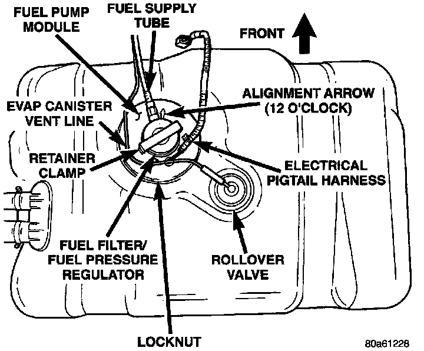

Rollover Valve: Service and Repair
ROLLOVER VALVEFig. 1 Rollover Valve Location:

The fuel tank is equipped with a rollover valve. The valve is located on the top of the fuel tank (Fig. 1).
The pressure relief/rollover valve is molded into the fuel tank and is not serviced separately If replacement is necessary the fuel tank must be replaced. Refer to Fuel Tank/Service and Repair, for procedure.
Service and Repair